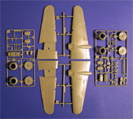
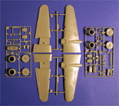
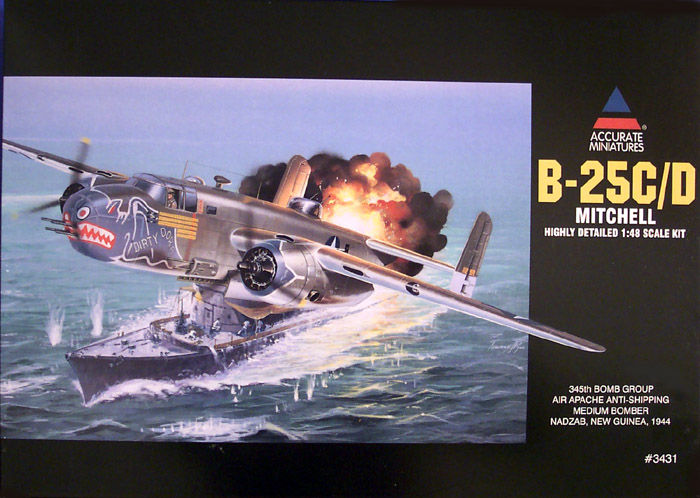
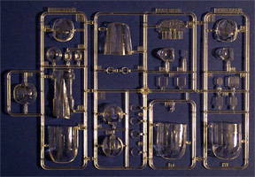
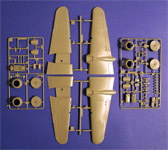
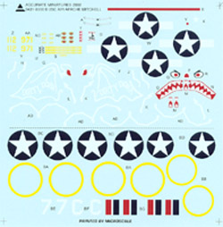

{kind=link}
{kind=link}

 

{kind=link}
Click on any of the above images to view a larger picture
Accurate Miniatures 1/48 B-25C/D Mitchell

Kit #3431 MSRP $49.99 USD
Images and text Copyright � 2004 by Matt Swan
Developmental History
The B-25 medium bomber was one of America's most famous airplanes of WW II. It was the type used by General Jimmie Doolittle for the Tokyo Raid on April 18, 1942. Subsequently, it saw duty in every theater of combat, being flown by the Dutch, British, Chinese, Russians and Australians in addition to our own U.S. forces. Although the airplane was originally intended for level bombing from medium altitudes, it was used extensively in the Pacific area for bombing Japanese airfields from treetop level and for strafing and skip bombing enemy shipping.
In March of 1939 the Air Corps issued Proposal No. 39-640 for the design of a medium bomber. The proposal specified a bomb-load of 3000 pounds was to be carried over a range of 2000 miles at a top speed to exceed 300 mph. The proposal called for the Pratt & Whitney R-2800, the Wright R-2600, or the Wright R-3350. Requests for proposals were widely circulated throughout the industry. Martin, Douglas, Stearman, and North American all submitted proposals.
In November of 1939 a full scale B-25 mockup was approved and the first B-25, serial number 40-2165, was in final assembly by the early summer of 1940. On August 19th, 1940 the B-25 lifted off for the first time with test pilot Vance Breese at the controls and engineer Roy Ferren sitting in the right hand seat. Original operation specifications called for a crew of five -- pilot, copilot, bombardier, navigator/radio operator, and gunner. The navigator's compartment was directly behind the flight deck. Apparently the idea of honoring General "Billy" Mitchell by naming the B-25 in his memory was originated by Lee Atwood.
9,816 B-25s were built during WW II with large numbers going to the Royal Air Force, the Soviet Union, Holland, Australia, and Brazil. After the war, the Mitchell soldiered on in training roles with the USAF for many years, the last example not being retired until 1959. They served with other air forces even longer, remaining flying into the late 1970's with some Latin American air forces. A number of Mitchells are still flying today on the international air show circuit.
The Kit
Oh baby, this is one very sweet package of plastic. First let us talk about the box; we have a large box with cover art of �Dirty Dora�, which was declared "war weary" and retired in August of 1944 and the reverse side of the box has a large, full color print of the completed model. The box is large and heavy and full of good stuff. Inside there are several plastic bags containing the various sprues of light gray plastic parts followed by a false bottom under which is the clear parts, a bag of numbered nose weights, a large sheet of decals, an extensive instruction booklet and a sheet of painting masks. Overall, an outstanding job of packaging

Now let�s talk about the parts themselves, everything has finely engraved panel lines and rivets. The sprue gates are small and placed logically. The plastic is high-grade contemporary polystyrene; not too brittle, not too soft. I did not see any injector pin markings anywhere that would present a problem. On the engine pistons I did note a slight misalignment of the molds. There is one complete sprue of nothing but bombs and depth charges giving the modeler a nice selection of hardware to load the craft with. There are a total of 205 light gray injected plastic pieces but you will not be using all of them dependent on the version of the aircraft you build. We also get a large sprue of clear parts that offer several alternative pieces for main canopy and nose sections, there are 30 pieces on this sprue giving us a total of 235 plastic pieces in the box.
While the kit is really aimed at building �Dirt Dora� options are provided for alternative aircraft such as the inclusion of the belly turret and different nose glazings. We get two options on the engine nacelles to build for the �Dirty Dora� with smooth nacelles or to build alternative aircraft with the individual Clayton �S� type exhausts. The engines themselves are very well detailed with a nicely done crankcase assemble and ignition harness.
Inside the fuselage we have a wealth of detail. The cockpit/nose compartment is very well done, all the gun positions are well detailed and include spent shell collection bags � the first model I have seen to include this feature. The level of detail is so intense as to make me wonder why Accurate Miniatures did not include at least one clear fuselage half so that all of this can be better appreciated once the model is complete.

Click on any of the above images to view a larger picture

Instructions and Decals
Kudos once again to Accurate Miniatures for a job well done. The instruction booklet for this kit is very extensive. The first few pages talk about the history of the aircraft, various modifications done in the field and dedicates the model to the crew of �Dirty Dora�. The model is intended to build as a series of sub-assemblies and AM points this out as well as how the modeler can divert from or change the order of sub-assembly construction. Painting instructions are included at the beginning of each step and are thorough to say the least. There are twenty highly detailed construction steps followed by three pages of painting and decal placement instructions.
The kit includes a large sheet of decals printed by Micro Scale which provides marking for two different aircraft; one is 7C from the North African campaign and the other is, you guessed it, �Dirty Dora�. Now many years ago Revell produced a set of decals for this aircraft that were very difficult to apply being a large decal applied over many compound curves. Accurate Miniatures has addressed this problem by providing us with painting masks for the nose along with a full page of instructions on how to apply them and probable methods of paint mixing to achieve the correct shade of blue. Once the basic bat shape has been painted then a white decal edging gets placed along with the teeth and eyes to complete this unusual piece of nose art. Technically speaking the decals show good registry and good color density. They appear to be adequately thin and most likely will respond well to setting solutions, after all, they are Micro Scale decals.
Conclusions
What a magnificent kit. It is more of a project model than something you might put together over the weekend. The parts are well engineered, the directions are well thought out and presented in a logical manner, the decals are not only very nice but are designed to overcome the problems associated with applying large decals over multiple compound curves. The only problem I found with the kit was the single mold misalignment on the engine cylinders and the lack of a clear fuselage half. As far as aftermarket goodies, there are plenty available to dress this model up even further. Aires does a cockpit kit for this bird, Albatros Decals does a very nice and very thorough set of alternative decals for it, Cutting Edge does a variety of mask sets, flying control surfaces and decals as well as replacement engine cowlings for both early and late model B-25s. Eduard offers several detail packages and E-Z Mask has some masking sheets also. Super Scale did quite a few different decal packages as well and Tasman, True Details and Verlinden also offer upgrades so you could go really nuts with some extras on this but really, the kit does not need that, it�s pretty darn nice right out of the box.
You like B-25s? Got a thing for DooLittle Raiders? Buy this kit, you won�t be disappointed.


{kind=link}